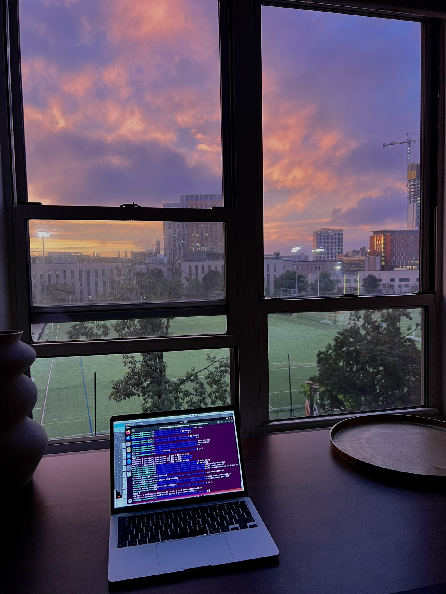

About me
Meet Me
I’m a third-year Computer Science student at Northeastern University, concentrating in Artificial Intelligence and minoring in Neuroscience. I’m fascinated by the intersection of computation, biology, and human behavior, and by how technology can be used to better understand—and interact with—living systems.
My work has taken me from studying animal behavior and computer vision in Harvard’s Engert Lab to exploring animal-computer interaction and building software across research and academic projects. I’m especially drawn to problems in neurotechnology, computational neuroscience, health technology, and human-centered AI, where technical work has a tangible connection to the way people live and experience the world.
Outside of computer science, I’ve always been a creator. Fashion has been one of my main forms of self-expression, and as Creative Director of Avenue, I get to combine creative direction, visual storytelling, and leadership. Reading and writing are equally important to me, giving me a completely different way to explore ideas and experiences.
Movement and sport have shaped me just as much. From marathon running and cycling to rugby, dance, hiking, and calisthenics, I’m happiest when I’m challenging myself physically. That curiosity carries across everything I do: I like learning things deeply, moving between disciplines, and taking on projects that push me somewhere I haven’t been before.

